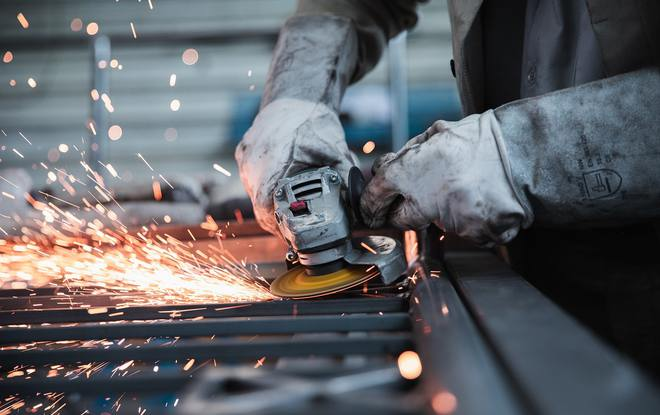
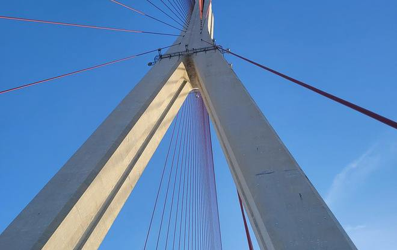
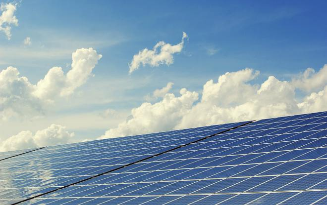
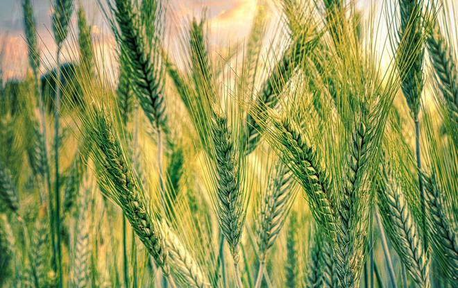

01
Construcții
Activitate de construcții și antreprenoriat — sursa disciplinei noastre de execuție pe șantier.
Poziționare
A descrie BRAMS drept „o companie internațională de echipamente industriale și mobilitate” a fost o îmbunătățire reală față de „importăm echipamente de construcții” — dar tot descria compania prin produsele sale. Această pagină formulează o afirmație mai precisă: BRAMS este o companie de active industriale.
Distincția contează, pentru că schimbă ce are dreptul compania să devină fără o reconstrucție a brandului. Macaralele și excavatoarele sunt expresia de astăzi a acestui rol. Leasingul de flote, finanțarea echipamentelor și distribuția de vehicule americane urmează. Echipamentele autonome și electrificate, telematica inteligentă și finanțarea de proiecte reprezintă orizontul de după.
Nimic din toate acestea nu obligă BRAMS să explice de ce nu este dintr-odată „doar o companie de macarale” — categoria nu a fost niciodată atât de îngustă.
Diferența BRAMS
Majoritatea distribuitorilor de echipamente și a firmelor de închiriere sunt comercianți — cumpără echipamente și le vând sau le închiriază mai departe. Ceea ce face BRAMS greu de copiat pentru un competitor pur comercial este acesta: este susținută de un grup industrial activ el însuși în construcții, dezvoltare de infrastructură, energie regenerabilă și agricultură.
Grupul dezvoltă el însuși proiecte de infrastructură și construcții. BRAMS cunoaște șantierul direct, nu la mâna a doua.
Active comparabile funcționează în proiecte active. Știm ce înseamnă o mașină în condiții reale de lucru.
Nu ghicim ce așteaptă un antreprenor, un dezvoltator sau o instituție publică de la un echipament — grupul a avut această așteptare.
„BRAMS a fost creată de un grup care dezvoltă el însuși infrastructură. Nu furnizăm doar echipamente — înțelegem proiectele, pentru că le operăm.”Principiul de Poziționare BRAMS
Ecosistemul Grupului
Grupul din spatele BRAMS este activ în mai multe domenii. Aceste activități sunt dovada scării și a experienței operaționale a grupului; nu sunt o afirmație că BRAMS însăși operează în toate.

01
Activitate de construcții și antreprenoriat — sursa disciplinei noastre de execuție pe șantier.

02
Experiență directă în dezvoltarea și livrarea proiectelor de infrastructură.

03
Investiții în energie și apropiere de realitatea de echipamente și logistică a sectorului energetic.

04
Activitate de producție agricolă — un indicator al scării operaționale a grupului.
Activitățile grupului în agricultură și producție alimentară sunt dovada scării și a experienței operaționale a grupului. Nu sunt o afirmație că BRAMS activează în industria alimentară. Pe acest site, Agricultură & Infrastructură Rurală înseamnă echipamente de infrastructură care deservesc agricultura — irigații, depozite frigorifice și infrastructură de procesare alimentară.
Foaie de Parcurs
Tabelul de mai jos nu este o listă de promisiuni — este o hartă a locurilor unde ajunge categoria. Fiecare linie nouă de activitate rămâne un activ industrial care servește aceiași clienți și aceeași misiune.
Astăzi
Echipamente
Urmează
Flotă & Finanțare
Orizont
Activele Viitorului
Identitate Geografică
Nu
„BRAMS importă echipamente din SUA și Europa.”
Ci
„BRAMS conectează producția nord-americană și europeană cu piețele de infrastructură din Türkiye și regiunea învecinată.”
Türkiye, România, Europa și America de Nord nu trebuie citite ca o listă de locuri din care și către care expediază BRAMS. Ele sunt forma companiei: o platformă poziționată la intersecția producției nord-americane și europene cu una dintre cele mai rapid crescătoare piețe de infrastructură din regiune.
Această încadrare face două lucruri simultan. Pentru un antreprenor, semnalează acces la utilaje de clasă mondială. Pentru un partener OEM sau o agenție de credit la export, semnalează mai degrabă o platformă de intrare pe piață decât un revânzător local — o discuție semnificativ diferită cu un producător sau o bancă.
| Piață | Rol | Interlocutor principal |
|---|---|---|
| America de Nord | Producție, aprovizionare cu vehicule și echipamente; parteneriate de distribuție | OEM-uri, producători de vehicule, agenții de credit la export |
| Europa | Producție OEM, tehnologie și acces la lanțul de aprovizionare | Producători, furnizori de tehnologie, finanțatori |
| Türkiye | Cerere de infrastructură, energie și dezvoltare industrială; bază operațională | Antreprenori, dezvoltatori, instituții publice |
| România | Piață regională de infrastructură și acces în interiorul Uniunii Europene | Antreprenori, dezvoltatori, programe publice |
Piloni de Mesaj
BRAMS știe de ce are nevoie un proiect, pentru că grupul său a derulat proiecte.
Poziționată între producția nord-americană și europeană și cererea regională de infrastructură.
Activitatea de echipamente de astăzi este fundația liniilor de flotă, mobilitate și finanțare deja în pregătire.
Parteneriate măsurate în proiecte și ani, nu în comenzi individuale.
Discutați cu echipa noastră despre un proiect, o colaborare de distribuție sau o evaluare de finanțare.